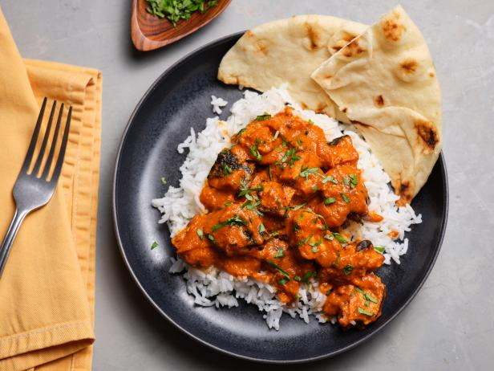

The chicken tikka masala dish, not to be confused with the Italian dish, chicken marsala, typically consists of roasted marinated chicken in a spicy curry sauce mixed with yogurt. Altogether, the dish typically has a creamy-orange appearance. However, there is a large variety of ways for this dish to be made and between all of the different recipes of making it, the only common ingredient is a form of chicken to use for the chicken chunks.